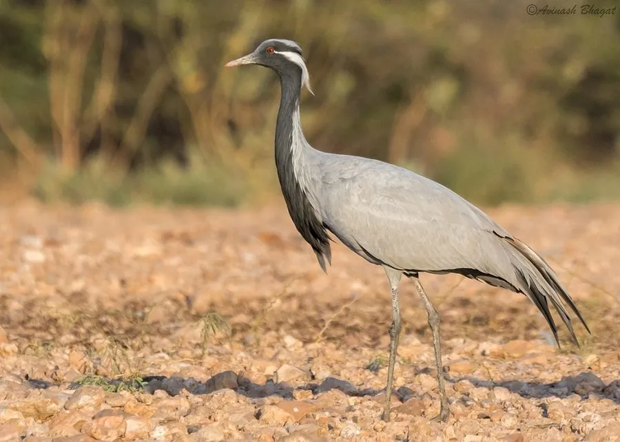

鸟类 · 动物界
蓑羽鹤 Grus virgo

体型最小的鹤类，胸前垂着黑色蓑羽，能飞越喜马拉雅山脉迁徙，在中国北方草原繁殖、在印度越冬。
- 分类
- 门脊索动物门纲鸟纲目鹤形目科鹤科属鹤属
- 栖息环境
- 开阔的草原、荒漠草原和农田，繁殖期选择偏僻的短草地带
- 地理分布
- 繁殖于欧亚草原，包括中国北方、蒙古和中亚，越冬于印度和非洲
- 保护级别
- IUCN 无危（LC）；中国国家二级保护动物
物种志
蓑羽鹤是体型最小的鹤类，体长 85–100 cm，体重 2–3 kg，翼展 155–180 cm。它通体呈淡灰蓝色，头顶和颈前为黑色，眼后有一簇白色耳羽向后延伸，胸前垂着黑色的长蓑羽，雌雄都有；喙短而呈暗绿色，腿黑色。它体态玲珑，行动轻盈，所以有“闺秀鹤”之称。
蓑羽鹤在欧亚草原繁殖，中国内蒙古、新疆、黑龙江等地都有繁殖种群，冬季迁往印度和非洲越冬。迁徙时它们要翻越喜马拉雅山脉，飞行高度可达数千米，是少数能完成这种高海拔迁徙的鸟类。它们吃谷物、草籽和昆虫，常在草原和农田中觅食。繁殖期在地面浅坑中产卵 2 枚，孵化 27–29 天，雏鸟出壳后很快就能行走。目前全球种群相对稳定，被列为无危物种，中国将其列为国家二级保护动物。
形态与习性
- 食性谷物、草籽、昆虫和小型无脊椎动物
- 体长85–100 cm
- 体重2–3 kg
- 翼展155–180 cm
- 繁殖每窝 2 枚卵，孵化 27–29 天
- 寿命野外约 15–20 年
- 迁徙翻越喜马拉雅山脉，飞行高度可达数千米
趣味知识
- 蓑羽鹤是体型最小的鹤类，体长约 90 cm，体重仅 2–3 kg。
- 迁徙时它们要飞越喜马拉雅山脉，飞行高度可达数千米。
- 胸前黑色的长蓑羽是蓑羽鹤的标志，雌雄个体都有。
- 蓑羽鹤性情温顺、体态玲珑，因此有“闺秀鹤”的美称。